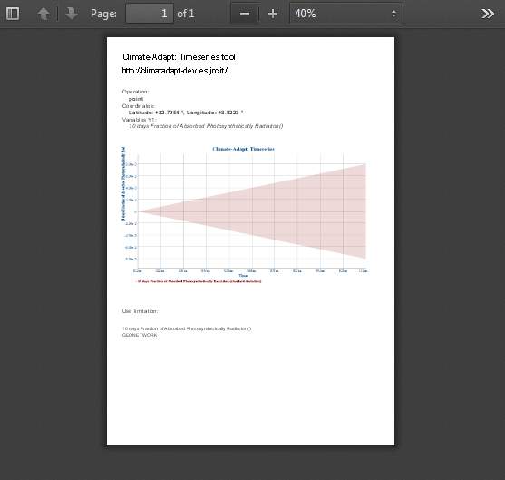
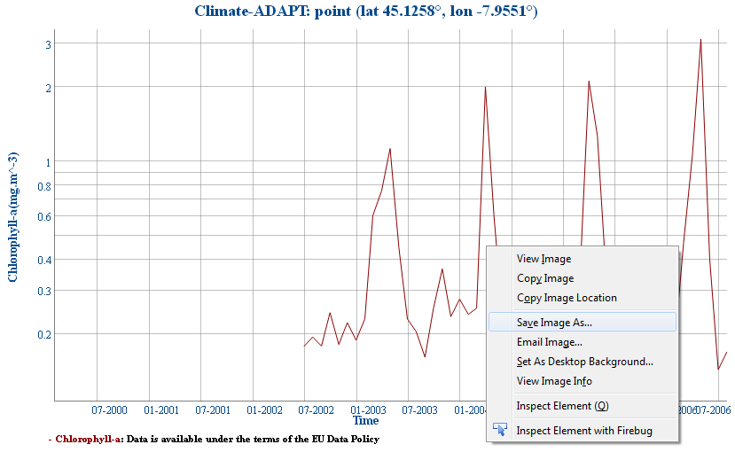

<h2>Graph output: export</h2>
<p>
Click on the tool section:
<ul>
<li>
 to export as PDF.
<br>
The system will open a popup page with a PDF document as shown below:
<br>

</li>
<li>
 to export as PNG.
<br>
The system will open a popup page with a PNG image as shown below: 
<br>

</li>
</ul>
<br>
Right click to save the graph.
</p>
